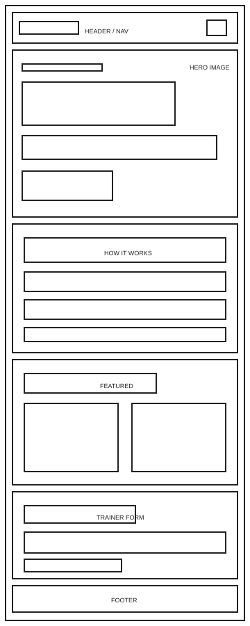
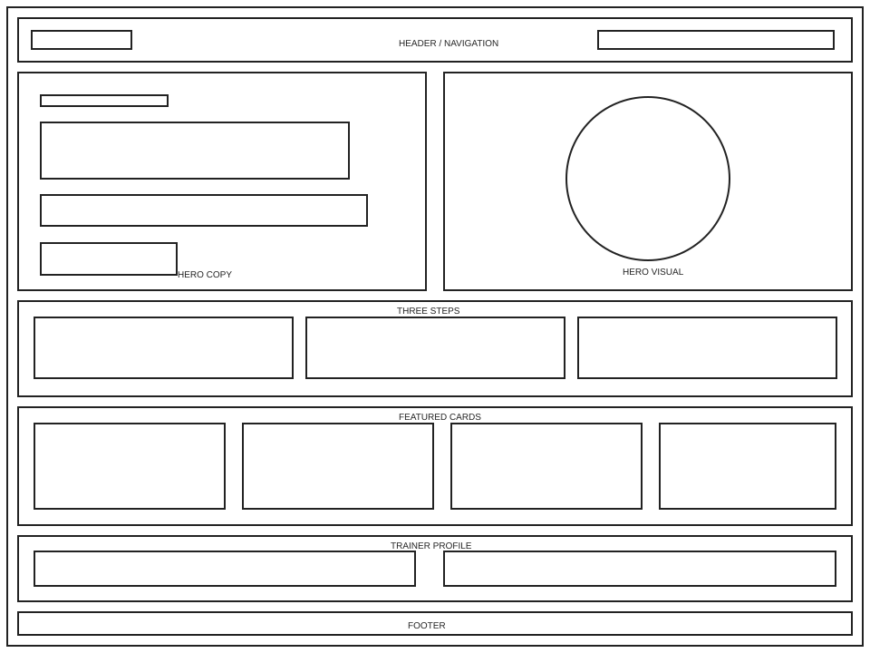

Site name
BattleLab — Pokémon Battle Challenge
The name combines a competitive battle with a laboratory where data is inspected and compared. “Lab” reflects the central use of Pokémon statistics.
Optional domain: battlelab.games
Site purpose
BattleLab provides a fast, data-driven Pokémon team challenge. Visitors can explore Pokémon supplied by PokéAPI, inspect detailed base statistics, filter the roster, save a team of three, and compare that team against randomly selected opponents. It also stores trainer preferences and the battle record locally.
Scenarios
- Which three Pokémon have the best combination of attack, defense, and speed for my team?
- How does a Pokémon’s complete set of base statistics compare before I select it?
- Can my chosen team defeat a randomly generated rival team?
Color scheme
Headings, navigation, buttons, and dark sections.
Brand identity, hero artwork, links, and data emphasis.
Calls to action, highlights, scores, and success.
Primary page background and whitespace.
Typography
Space Grotesk
Used for display headings, scores, labels, and the wordmark because its geometric construction supports the technical game concept.
DM Sans is used for body copy, navigation, forms, and interface controls because it remains clear at small sizes.
Wireframes
The home-page wireframes focus on structure and hierarchy before decorative styling.

